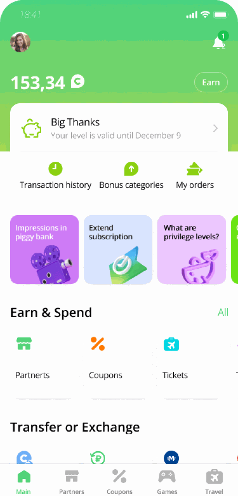
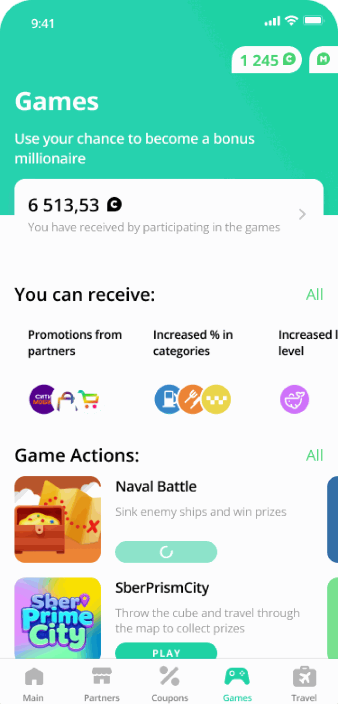
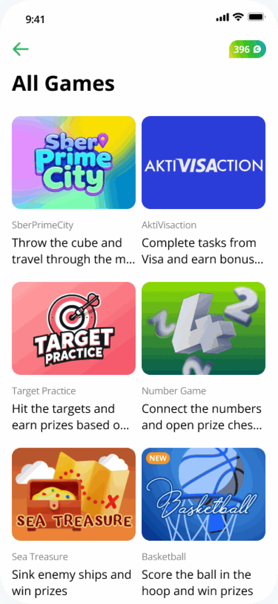
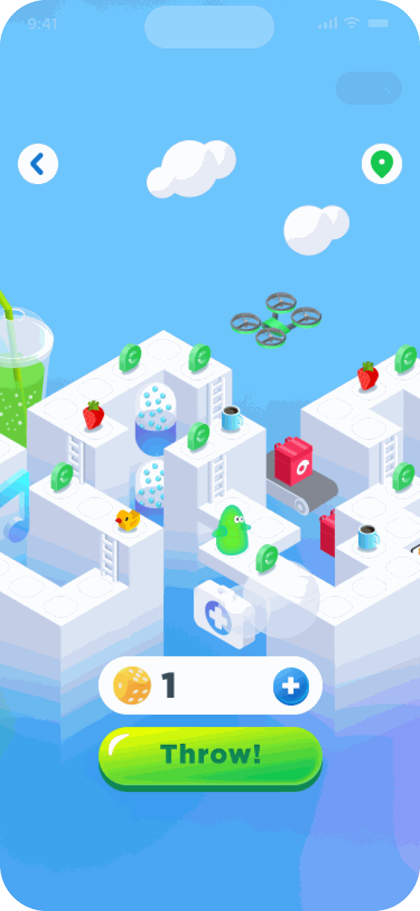
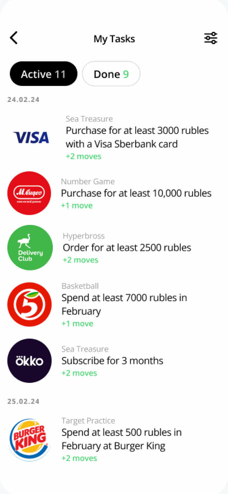
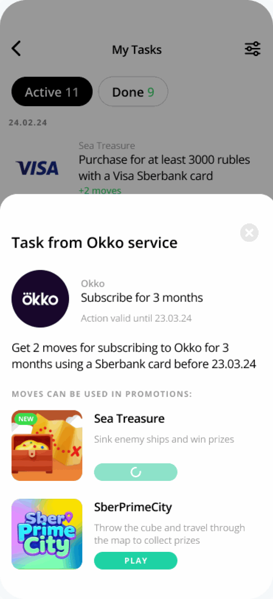
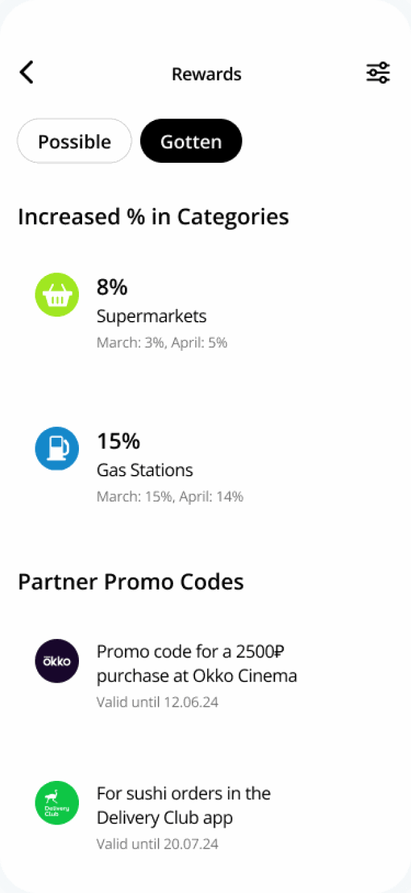
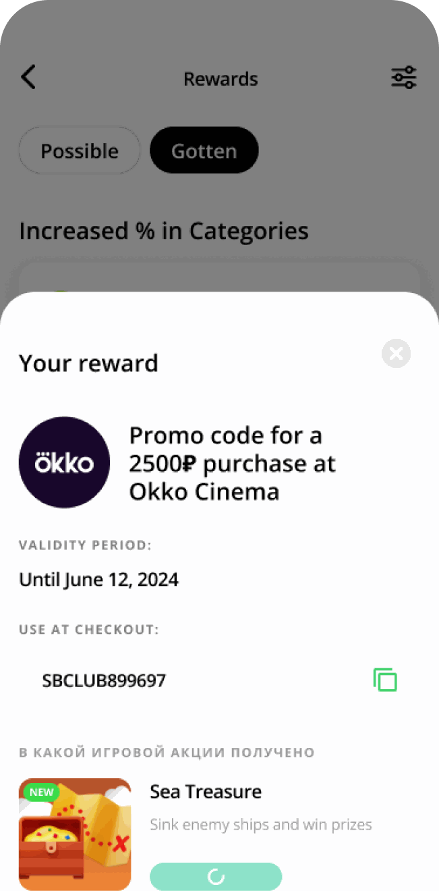
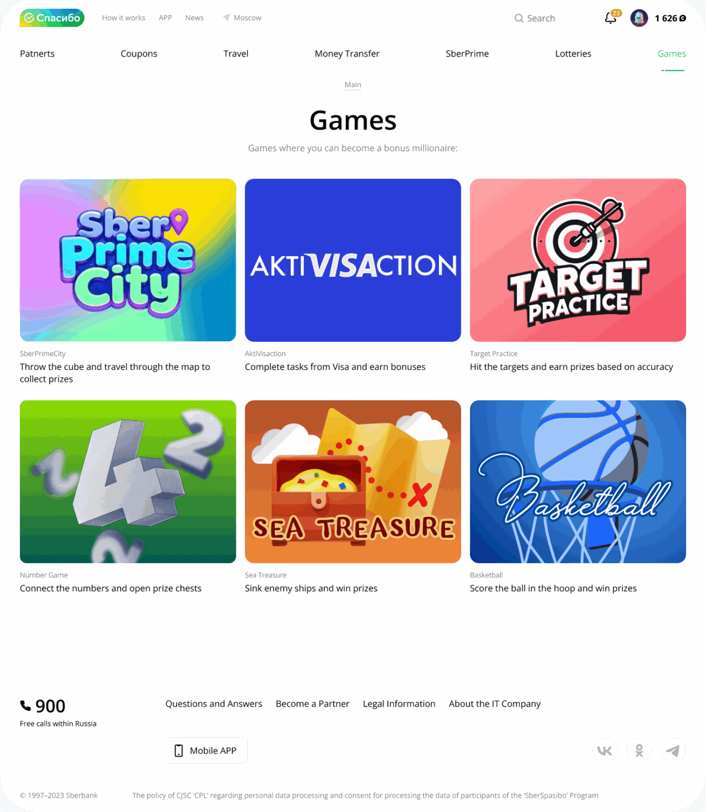
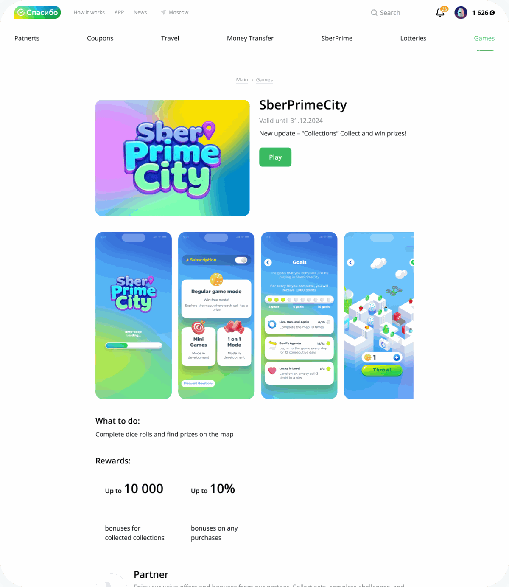

SberSpasibo · 2022–2023СберСпасибо · 2022–2023
SberSpasibo is Sber’s loyalty programme: people earn bonuses for paying by card and spend them with partners. Many earned bonuses but didn’t come back to use them. I designed games and tasks around the bonuses, and when the app left the stores, moved the whole thing to the web
СберСпасибо – программа лояльности Сбера: бонусы начисляются за оплату картой, а потратить их можно у партнёров. Многие копили бонусы, но не возвращались, чтобы их потратить. Я спроектировала игры и задания вокруг бонусов, а когда приложение пропало из сторов, перенесла всё это в веб
Context
Контекст
People had bonuses but no reason to open the programme regularly. There were no missions or challenges to come back for, and it wasn’t clear how to earn bonuses or what to spend them on
Бонусы у людей были, а повода регулярно заходить в программу – нет. Ни заданий, ни испытаний, ради которых стоило бы вернуться, и непонятно, как заработать бонусы и на что их потратить
Midway through, the task changed: the app was removed from the stores, and the programme had to keep working on the web – quickly and without a personal account
По ходу работы задача поменялась: приложение удалили из сторов, и программе нужно было продолжить работу в вебе – быстро и без личного кабинета
Give people a reason to come back – and make it obvious what their bonuses can buy
Дать человеку повод вернуться – и показать, что можно получить за бонусы
Approach
Подход
Partner tasks – pay with a Sber card at a store, subscribe to Okko – each show what they give: +1 or +2 moves. Open a task and you see the deadline and which games the moves work in
Задания партнёров – оплатить картой Сбера в магазине, оформить подписку Okko – сразу показывают, что за них дадут: +1 или +2 хода. В самом задании видно срок и в каких играх эти ходы пригодятся
A Games section with every game, a picture and one line of rules each, and the bonuses already won on top. From there it’s one tap to play
Раздел «Игры»: все игры с картинкой и правилами в одну строку, а сверху – сколько бонусов уже выиграно. Оттуда до игры одно нажатие
Rewards split into available and received. A won promo code shows its validity, the code to copy and which game it came from
Награды разделены на доступные и полученные. У выигранного промокода видно срок, код, который можно скопировать, и игру, в которой он получен








From app to web
Из приложения в веб
When the app was removed from the stores, the games had to live on the web. Instead of building a personal account there, we kept the core – games, tasks and rewards – and made them work without it. That’s what let the web version launch fast
Когда приложение удалили из сторов, игры должны были переехать в веб. Вместо того чтобы делать там личный кабинет, мы оставили главное – игры, задания и награды – и сделали так, чтобы они работали без него. Благодаря этому веб-версия вышла быстро


Trade-off
Компромисс
Without an account, the web version lost personalisation: no tasks picked for you and no progress history. We accepted it to keep the programme running while the app was gone
Без личного кабинета веб-версия потеряла персонализацию: нет заданий, подобранных под человека, и нет истории прогресса. Мы пошли на это, чтобы программа продолжала работать, пока приложения нет
Research
Исследование
Research with 50+ respondents, usability tests on clickable prototypes and heatmaps. With the prototypes we checked whether tasks bring people back, whether progress keeps them motivated and whether the simpler reward system is easier to understand
Исследование на 50+ респондентах, юзабилити-тесты на кликабельных прототипах и тепловые карты. На прототипах проверяли, возвращают ли задания людей, мотивирует ли прогресс и понятнее ли упрощённая система наград
Results
Результаты